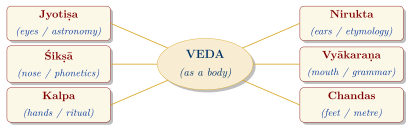
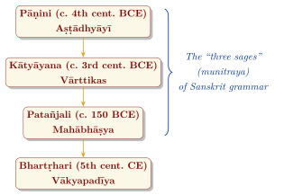
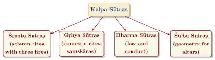

Chapter 7: The Six Vedāṅgas: Limbs of the Veda¶
Invocatory Verse
chandaḥ pādau tu vedasya hastau kalpo ’tha paṭhyate
jyotiṣām ayanaṃ cakṣur niruktaṃ śrotram ucyate
śikṣā ghrāṇaṃ tu vedasya mukhaṃ vyākaraṇaṃ smṛtam
Metre is said to be the feet of the Veda, ritual its hands,
astronomy its eyes, etymology its ears,
phonetics its nose, and grammar its mouth.
— Pāṇinīya Śikṣā 41–42
7.1 Introduction to the Vedāṅgas¶
The Vedāṅgas (“limbs of the Veda”) are six auxiliary sciences that grew up to preserve, understand and correctly perform the Vedic texts: phonetics (śikṣā), metre (chandas), grammar (vyākaraṇa), etymology (nirukta), astronomy and calendar (jyotiṣa) and ritual procedure (kalpa). The list of six is already given in the Muṇḍaka Upaniṣad (1.1.5); Figure 7.1 shows the later image of them as the limbs of the Veda’s body. Most of the surviving Vedāṅga texts are composed in the terse sūtra style and date from c. 600 BCE to the early centuries CE.
These disciplines are among the most remarkable intellectual achievements of ancient India. The need to preserve sacred sound exactly produced phonetics of great precision; the need to understand archaic texts produced etymology and grammar; the need to build altars and to time rituals produced geometry and calendrical astronomy. This chapter introduces them as aids to the Veda; phonetics, grammar and etymology are treated in full in Volume 10 of this series, Śabda Vidyā, the geometry of the Śulba Sūtras and Piṅgala’s combinatorics in Volume 11, Gaṇita, and the Vedāṅga Jyotiṣa in Volume 12, Khagola Jyotiṣa.

7.2 Śikṣā: Phonetics¶
Śikṣā is the science of correct pronunciation. Since the power of a mantra was believed to depend on its exact sound, it was of the first importance. The Taittirīya Upaniṣad (1.2) lists its six topics:
-
Varṇa — the sounds (vowels, stops, semivowels, sibilants);
-
Svara — the pitch accents (udātta, anudātta, svarita);
-
Mātrā — quantity (short, long, prolonged);
-
Bala — effort of articulation;
-
Sāma — even delivery;
-
Santāna — the connection of sounds in continuous recitation (sandhi).
The oldest phonetic treatises are the Prātiśākhyas, manuals attached to particular schools (the Ṛgveda Prātiśākhya, the Taittirīya Prātiśākhya and others). They describe the place and manner of articulation of every sound and the rules for converting the word-by-word recitation into the continuous text. Their analysis of the sounds of language—arranged by place of articulation from the throat to the lips—underlies the order of the Indian alphabets to this day, and modern phoneticians have praised it highly. Later and shorter manuals bear the name Śikṣā, such as the Pāṇinīya Śikṣā, whose attribution to Pāṇini is doubtful.
Note: The Story of Indraśatru
The ritual prose texts (Taittirīya Saṃhitā 2.4.12.1; Śatapatha Brāhmaṇa 1.6.3.8–10) tell how Tvaṣṭṛ, wishing for a son who would kill Indra, pronounced the compound indraśatru; the grammarians explain that he gave it the wrong accent (Patañjali, Mahābhāṣya, Paspaśā). Instead of meaning “slayer of Indra” it came to mean “he whose slayer is Indra”, and Indra killed the son, Vṛtra. The story is often cited to show why the accent mattered.
7.3 Chandas: Metre¶
Chandas is the study of metre; the word is also used as a name for the Vedic texts themselves. The foundational surviving text is the Chandaḥsūtra of Piṅgala (dated variously between c. 300 BCE and the early centuries CE), which treats both Vedic and classical metres. Lists of Vedic metres also appear in the Prātiśākhyas and in the Saṃhitās and Brāhmaṇas themselves (Table 7.1).
| Metre | Syllables per Pāda | Pādas | Remarks |
|---|---|---|---|
| Gāyatrī | 8 | 3 | The Gāyatrī verse (RV 3.62.10) |
| Uṣṇih | 8+8+12 | 3 | |
| Anuṣṭubh | 8 | 4 | Develops into the classical śloka |
| Bṛhatī | 8+8+12+8 | 4 | |
| Paṅkti | 8 | 5 | |
| Triṣṭubh | 11 | 4 | The commonest metre of the Ṛgveda |
| Jagatī | 12 | 4 |
Piṅgala and Combinatorics
Piṅgala’s treatment of metres includes rules (pratyaya) for listing every possible sequence of light (laghu) and heavy (guru) syllables of a given length, for finding the position of a given pattern in that list, and for counting how many patterns contain a given number of heavy syllables. Historians of mathematics note that, if light and heavy are written as 1 and 0 (or 0 and 1), his procedure for numbering the patterns is equivalent to writing numbers in binary, and his counting rule leads to the binomial coefficients. The triangular arrangement of these coefficients (the “Mount Meru” diagram, meru-prastāra) is described explicitly by the commentator Halāyudha (10th century CE), and the sequence later called “Fibonacci” appears in the counting of metres based on syllable-length (mātrā) by Virahāṅka and later writers (Plofker 2009). These are genuine and early achievements in combinatorics; they were developed for prosody, not as a general theory of number.
7.4 Vyākaraṇa: Grammar¶
Grammar was regarded as the chief of the Vedāṅgas. Its supreme text, Pāṇini’s Aṣṭādhyāyī (“eight chapters”, c. 4th century BCE), describes the Sanskrit of Pāṇini’s day, with notes on Vedic forms, in nearly 4,000 short rules (sūtras). By means of technical abbreviations, meta-rules governing the application of other rules, and an ordered system of derivation, it generates correct word-forms from roots and suffixes. It is widely regarded as one of the greatest achievements of linguistic analysis in any culture. Modern linguists and computer scientists have compared its techniques with formal grammars and with notations used to specify programming languages; such comparisons are illuminating analogies, not claims that Pāṇini anticipated computers. Pāṇini himself names earlier grammarians, so he stands at the end of a long tradition.
7.4.1 Key Grammatical Texts¶
The principal works are listed in Table 7.2; Figure 7.2 shows the line of transmission.
| Text | Author (date) | Significance |
|---|---|---|
| Aṣṭādhyāyī | Pāṇini (c. 4th c. BCE) | The foundational grammar |
| Vārttikas | Kātyāyana (c. 3rd c. BCE) | Critical supplements to Pāṇini |
| Mahābhāṣya | Patañjali (c. 150 BCE) | The “great commentary” |
| Vākyapadīya | Bhartṛhari (5th c. CE) | Philosophy of language |
| Siddhāntakaumudī | Bhaṭṭoji Dīkṣita (17th c. CE) | Topical rearrangement for teaching |

7.5 Nirukta: Etymology and Interpretation¶
Nirukta is the explanation of the meanings of Vedic words, especially obscure ones. Its foundational text is Yāska’s Nirukta (c. 5th century BCE), a commentary on an older word-list, the Nighaṇṭu. Yāska’s work:
-
is one of the oldest surviving works on etymology in any language;
-
preserves the views of earlier interpreters, such as Śākapūṇi and Aurṇavābha, and of rival schools (ritualists, “etymologists”, “historians”);
-
classifies words into four kinds: nouns (nāma), verbs (ākhyāta), preverbs (upasarga) and particles (nipāta) (Nirukta 1.1);
-
defends the principle, against the grammarian Gārgya, that all nouns are derived from verbal roots.
Yāska determines meaning by derivation from a verbal root, by the context of the hymn and the ritual, and by the tradition of earlier interpreters. He also records the view of one Kautsa, who argued that the Vedic mantras are meaningless (anarthaka) and effective only as sound, and he rebuts it point by point (Nirukta 1.15–16), insisting that the mantras have meanings that can be recovered by careful study—one of the earliest recorded debates about the interpretation of a sacred text.
7.6 Jyotiṣa: Astronomy and Calendar¶
Jyotiṣa served to fix the times of rituals, which depended on the phases of the moon, the seasons and the positions of the sun and moon among the nakṣatras. Its foundational text, the Vedāṅga Jyotiṣa attributed to Lagadha, survives in a Ṛgvedic recension of 36 verses and a Yajurvedic recension of 43 verses.
The Pre-eminence of Jyotiṣa
yathā śikhā mayūrāṇāṃ nāgānāṃ maṇayo yathā
tadvad vedāṅgaśāstrāṇāṃ jyotiṣaṃ mūrdhani sthitam
As the crest on the heads of peacocks, as the gems on the heads of serpents,
so is Jyotiṣa at the head of the sciences of the Vedāṅgas.
— Vedāṅga Jyotiṣa, Ārca recension 35
The Yājuṣa recension (verse 4) has the same verse but reads gaṇitaṃ (“calculation”) for jyotiṣaṃ.
Key Parameters of the Vedāṅga Jyotiṣa
-
A five-year cycle (yuga) of 1,830 days
-
62 synodic months in the cycle, so that two intercalary months are needed
-
67 sidereal months in the cycle
-
The winter solstice at the beginning of the nakṣatra Śraviṣṭhā (Dhaniṣṭhā), the summer solstice in the middle of Āśleṣā
-
Time measured with a water clock in units of nāḍikās
The solstice positions given by the Vedāṅga Jyotiṣa correspond to the sky of roughly 1400–1150 BCE. The language and style of the text, however, are much later, and many scholars date its composition to the last centuries BCE. Either it preserves an older tradition of observation, or its data were conventional and approximate; this is a further example of the caution needed in using astronomy to date texts (Plofker 2009). The twenty-seven nakṣatras on which the system rests are listed in Table 7.3.
| No. | Nakṣatra | Deity | No. | Nakṣatra | Deity |
|---|---|---|---|---|---|
| 1 | Kṛttikā | Agni | 15 | Anurādhā | Mitra |
| 2 | Rohiṇī | Prajāpati | 16 | Jyeṣṭhā | Indra |
| 3 | Mṛgaśīrṣa | Soma | 17 | Mūla | Pitṛs / Nirṛti |
| 4 | Ārdrā | Rudra | 18 | Pūrvāṣāḍhā | Āpaḥ (Waters) |
| 5 | Punarvasu | Aditi | 19 | Uttarāṣāḍhā | Viśvedevas |
| 6 | Tiṣya (Puṣya) | Bṛhaspati | 20 | Śroṇā (Śravaṇa) | Viṣṇu |
| 7 | Āśleṣā | Sarpas (Serpents) | 21 | Śraviṣṭhā | Vasus |
| 8 | Maghā | Pitṛs (Fathers) | 22 | Śatabhiṣaj | Varuṇa |
| 9 | Pūrva Phalgunī | Aryaman | 23 | Pūrva Proṣṭhapadā | Aja Ekapād |
| 10 | Uttara Phalgunī | Bhaga | 24 | Uttara Proṣṭhapadā | Ahi Budhnya |
| 11 | Hasta | Savitṛ | 25 | Revatī | Pūṣan |
| 12 | Citrā | Indra (later Tvaṣṭṛ) | 26 | Aśvayuj (Aśvinī) | Aśvins |
| 13 | Svāti | Vāyu | 27 | Apabharaṇī (Bharaṇī) | Yama |
| 14 | Viśākhā | Indra and Agni |
In some lists a twenty-eighth asterism, Abhijit, is inserted between Uttarāṣāḍhā and Śravaṇa. Later Indian astronomy, from the early centuries CE, adopted the twelve zodiacal signs and planetary theory from Hellenistic astronomy and combined them with the older nakṣatra system.
7.7 Kalpa: Ritual Procedure¶
Kalpa (from kḷp, “to arrange”) is the systematic description of ritual. It is the most extensive of the Vedāṅgas, and its sūtras were composed by the schools of each Veda. They fall into four groups (Figure 7.3):

The Śrauta Sūtras systematise the solemn rituals described in the Brāhmaṇas. The Gṛhya Sūtras prescribe the domestic rites of the householder, including the life-cycle rites (saṃskāras) from conception to death. The Dharma Sūtras of Āpastamba, Gautama, Baudhāyana and Vasiṣṭha (c. 3rd–1st centuries BCE) are the earliest Indian law books; they codify the duties of the social classes and stages of life, and with them the hierarchy of varṇa and the disabilities of Śūdras and women that later law books developed further (Olivelle 1999). The Śulba Sūtras give the geometry needed to build the altars.
7.7.1 The Śulba Sūtras: Vedic Geometry¶
The Śulba Sūtras (from śulba, “cord”) of Baudhāyana, Āpastamba, Kātyāyana and Mānava are the earliest Indian mathematical texts. Using cords and pegs, they show how to construct right angles, squares and rectangles of given area; how to combine two squares into one or subtract one from another; how to turn a square into a circle of nearly equal area and back; and how to build bird-shaped and other altars from bricks of standard sizes. Their key results include:
-
a general statement of the theorem now called Pythagorean (see Section 3.10);
-
lists of integer right triangles, such as (3, 4, 5) and (5, 12, 13);
-
an approximation of \(\sqrt{2}\) correct to five decimal places;
-
approximate circle–square conversions, which imply values of \(\pi\) that depend on the rule and on how it is read: about 3.00 for the simplest rule of Baudhāyana and about 3.09 for his more accurate one, with some readings of other rules giving slightly higher values (Plofker 2009).
The diagonal theorem was known in practice in Old Babylonian mathematics centuries earlier (lists of Pythagorean triples appear on the tablet Plimpton 322, c. 1800 BCE); the Śulba Sūtras contain among the earliest explicit general statements of it, and are a distinctive tradition of constructive geometry developed for ritual (Plofker 2009). The principal texts and their approximate dates are given in Table 7.4.
| Śulba Sūtra | Approximate Date | Key Mathematical Content |
|---|---|---|
| Baudhāyana | c. 800–500 BCE | General statement of the diagonal theorem; \(\sqrt{2} \approx 1 + \frac{1}{3} + \frac{1}{3\cdot 4} - \frac{1}{3\cdot 4\cdot 34}\); circle–square transformations |
| Mānava | c. 750–350 BCE | Circle–square transformations |
| Āpastamba | c. 600–300 BCE | Refined constructions; area transformations |
| Kātyāyana | c. 400–200 BCE | Further constructions and generalisations |
7.8 Summary¶
The Vedāṅgas show how a religious need can generate a science. Each began as a service to the Veda—to pronounce it, to measure its verses, to understand its words, to time and build its rites—and each grew beyond that service into a discipline with its own methods: the phonetic analysis that still orders Indian scripts, a grammar that modern linguists study as a formal system, a constructive geometry and a calendar. The same process had a darker side. The Kalpa literature that codified the rites also produced, in the Dharma Sūtras, the first codifications of a hierarchical social order whose legacy India is still debating.
Closing Reflection
anādinidhanaṃ brahma śabdatattvaṃ yad akṣaram
vivartate ’rthabhāvena prakriyā jagato yataḥ
Brahman, without beginning or end, the imperishable essence of the Word,
which manifests itself as things, and from which the world proceeds.
— Bhartṛhari, Vākyapadīya 1.1